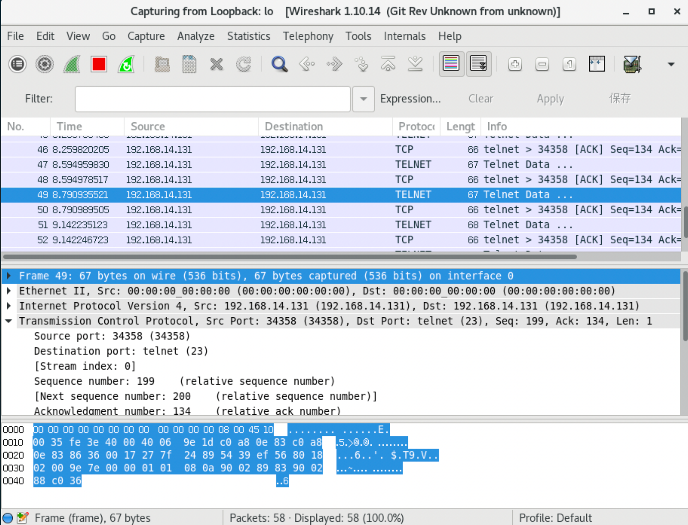

第11讲 Linux网络
第11讲 Linux网络1、Linux网络配置（1）计算机联网的必要配置（2）和网络配置有关的四个文件（3）常用网络命令（1）路由追踪traceroute（2）查看网络接口ifconfig（3）测试网络连通性ping（4）nmcli命令（1）【例题】查看系统的网络接口。（2）【例题】添加一个通过DHCP获取网络参数的网络连接mynet1。（3）【例题】再添加一个手动指定IP地址、子网掩码、网关和DNS的网络连接mynet2。（4）【例题】根据不同的需求，启用不同的网络连接。2、端口扫描（1）查看本机开放的端口netst（2）端口扫描之王nmap（3）端口监听与抓包tcpdump3、刘老师教你破解密码（1）配置环境（2）开始破解实验（3）数据包内容解析（4）第二种解析方法，使用wireshark解析4、systemctl管理服务（1）例如：管理sshd服务。（2）使用XRDP远程访问Linux桌面（3）使用VNC远程桌面（4）webssh：在浏览器中使用ssh客户端连接linux
1、Linux网络配置
（1）计算机联网的必要配置
三个必要的参数：
- IP地址
- 网关
- DNS服务器地址
IP地址是：连接在因特网的每一台计算机都有一个 IP 地址。这个 IP 地址在世界范围内必须是惟一的。路由器根据分组首部中的目的 IP 地址查找出下一跳路由器的地址。


网关：

DNS服务器：完成域名和IP地址的解析

郑州轻工业大学域名解析过程：www.zzuli.edu.cn 解析为：202.102.224.68
x1[root@almalinux examplesh]# nslookup www.zzuli.edu.cn2Server: 202.102.224.683Address: 202.102.224.68#534
5Non-authoritative answer:6Name: www.zzuli.edu.cn7Address: 202.196.0.138Name: www.zzuli.edu.cn9Address: 2001:250:4802:1008:500::13www.zzuli.edu.cn www是主机名；.zzuli在郑州轻工业大学内部管理；.edu是教育部管理；.cn中国；. 根域名服务器（全世界只有13台）
根域名服务器为什么只能是13台？
通过UDP协议传输的互联网域名系统消息，最大长度需要限制在512字节。
而512字节只够返回包含13个根域名服务器的NS记录和A记录的响应。
13台根服务器中，有10台位于美国本土，其余3台分布在英国、瑞典和日本。
此外还有一些镜像服务器部署在其他国家和地区，例如中国就有28个根镜像服务器。
第一种方式：DHCP配置。
网络系统需要有DHCP服务器，如下图所示：
第二种方式：手工静态配置。

（2）和网络配置有关的四个文件
| 文件名 | 作用 |
|---|---|
| /etc/sysconfig/net-work/ifcfg-ens160 | 网卡配置文件 |
| /etc/resolv.conf | DNS服务器配置文件 |
| /etc/services | 端口和服务一一对应的关系 |
| /etc/hosts | 存储了主机名和IP之间的对应解析关系 |
- 网卡配置文件
xxxxxxxxxx351#这里的网络配置方式，都是采用dhcp方式，自动配置网络参数，一般的局域网都采用这种方式。2//网卡参数配置文件,centos7版本，3[root@bogon ~]# cat /etc/sysconfig/network-scripts/ifcfg-ens160 4TYPE=Ethernet //表示网络类型5PROXY_METHOD=none6BROWSER_ONLY=no7BOOTPROTO=dhcp //表示网卡采用dhcp方式配置网络参数8DEFROUTE=yes9IPV4_FAILURE_FATAL=no10IPV6INIT=yes11IPV6_AUTOCONF=yes12IPV6_DEFROUTE=yes13IPV6_FAILURE_FATAL=no14NAME=ens16015UUID=8dfa9c91-29dc-4c73-ab2b-21dd93fe9487 //网卡的UUID16DEVICE=ens16017ONBOOT=yes //启用该网卡18
19#9.0版本，网络配置文件变成了如下：20[root@localhost ~]# cat /etc/NetworkManager/system-connections/ens160.nmconnection21[connection]22id=ens16023uuid=698712da-f2ad-3de9-8bd7-d5def6591a2f24type=ethernet25autoconnect-priority=-99926interface-name=ens16027timestamp=169861291528[ethernet]29[ipv4]30method=auto31[ipv6]32addr-gen-mode=eui6433method=auto34[proxy]35
- DNS服务器配置文件
xxxxxxxxxx51# 域名解析用到的一个文件2[root@bogon ~]# cat /etc/resolv.conf 3# Generated by NetworkManager4search localdomain5nameserver 192.168.14.2 //域名服务器的ip地址- 服务和对应端口
xxxxxxxxxx101# /etc/services 是一个服务名和对应服务端口的数据库文件2[root@bogon ~]# head -n 30 /etc/services 3# Each line describes one service, and is of the form:4#5# service-name port/protocol [aliases ...] [# comment]6
7tcpmux 1/tcp # TCP port service multiplexer8tcpmux 1/udp # TCP port service multiplexer9ssh 22/tcp # The Secure Shell (SSH) Protocol10ssh 22/udp # The Secure Shell (SSH) Protocol- DNS本机解析
xxxxxxxxxx71# /etc/hosts文件存储了2# 一般来说，当用户在电脑浏览器里输入网址(域名)后，系统需要通过查询网络上的 DNS 服务器，才能将域名解析成对应的 IP 地址，浏览器通过 IP 地址才能找到该网站所在的服务器并进行访问。3# 而操作系统的 hosts 文件则是有着“类似本地 DNS 服务器”的作用，而且比网络上的 DNS 具有更高的优先级。如果你在 hosts 里面配置了某个域名和IP的对应关系 ，这时不会再去查询网络上的 DNS 服务器。速度较快。4[root@almalinux ~]# cat /etc/hosts5127.0.0.1 localhost localhost.localdomain localhost4 localhost4.localdomain46::1 localhost localhost.localdomain localhost6 localhost6.localdomain6714.215.177.38 www.baidu.com #下次系统访问baidu的时候，就不需要DNS服务器进行查询了。（3）常用网络命令
（1）路由追踪traceroute
xxxxxxxxxx61[root@almalinux ~]# traceroute www.whitehouse.gov2traceroute to www.whitehouse.gov (192.0.66.168), 30 hops max, 60 byte packets3 1 bogon (192.168.0.1) 0.329 ms 0.246 ms 0.358 ms4 2 100.64.0.1 (100.64.0.1) 3.276 ms 3.258 ms 3.020 ms5 3 hn.kd.jz.adsl (221.15.169.81) 3.597 ms 3.768 ms 3.475 ms6...省略（2）查看网络接口ifconfig
xxxxxxxxxx101[root@almalinux ~]# ifconfig2ens160: flags=4163<UP,BROADCAST,RUNNING,MULTICAST> mtu 15003 inet 192.168.0.107 netmask 255.255.255.0 broadcast 192.168.0.2554 inet6 fe80::20c:29ff:fe6b:ba26 prefixlen 64 scopeid 0x20<link>5 ether 00:0c:29:6b:ba:26 txqueuelen 1000 (Ethernet)6 RX packets 239986 bytes 213844269 (203.9 MiB)7 RX errors 0 dropped 0 overruns 0 frame 08 TX packets 181178 bytes 19863848 (18.9 MiB)9 TX errors 0 dropped 0 overruns 0 carrier 0 collisions 010
（3）测试网络连通性ping
xxxxxxxxxx111[root@almalinux ~]# ping www.jingdong.com2PING mfn-df-sched.jcloudimg.com (123.6.77.65) 56(84) 比特的数据。364 比特，来自 hn.kd.ny.adsl (123.6.77.65): icmp_seq=1 ttl=57 时间=1.63 毫秒464 比特，来自 hn.kd.ny.adsl (123.6.77.65): icmp_seq=2 ttl=57 时间=1.91 毫秒564 比特，来自 hn.kd.ny.adsl (123.6.77.65): icmp_seq=3 ttl=57 时间=1.94 毫秒664 比特，来自 hn.kd.ny.adsl (123.6.77.65): icmp_seq=4 ttl=57 时间=2.21 毫秒7^C8--- mfn-df-sched.jcloudimg.com ping 统计 ---9已发送 4 个包， 已接收 4 个包, 0% packet loss, time 3002ms10rtt min/avg/max/mdev = 1.631/1.923/2.214/0.206 ms11# 最小值、平均值、最大值、方差。方差用来评估其偏离平均值的程度。有意思的极限测试
xxxxxxxxxx71# -f 参数 可以短时间内构造大量的数据包2[root@almalinux ~]# ping -f www.whitehouse.gov3PING wh46.go-vip.net (192.0.66.168) 56(84) 比特的数据。4...............^C5--- wh46.go-vip.net ping 统计 ---6已发送 445 个包， 已接收 430 个包, 3.37079% packet loss, time 5412ms7rtt min/avg/max/mdev = 183.455/183.989/186.456/0.351 ms, pipe 16, ipg/ewma 12.188/183.948 ms（4）nmcli命令
nmcli是一个命令行工具，用于控制NetworkManager和报告网络状态。
在NetworkManager里主要有两个对象：connection和device，这是多对一的关系，一个设备可以配置多个连接，每个连接可以理解为ifcfg配置文件。同一时刻，一个设备只能有一个连接处于活跃状态。
nmcli可以完成网卡上的所有配置工作，并且可以写入网卡配置文件，永久生效。
nmcli命令使用方法如下：
xxxxxxxxxx31[root@localhost ~]# nmcli --help2
3用法：nmcli [选项] 对象 { 命令 | help }这里的对象和参数可以使用全称也可以使用简称，对象中最常用的是device和connection，device是网络接口，是物理设备，connection是连接，是逻辑上的网络连接，同一个device可以有多个connection，但同一时间只能启用其中一个connection，可以对同一个网络接口device，配置多个网络连接，比如静态IP和动态IP，在实际工作中根据需要启动相应的网络连接即可。下面举例说明如何使用nmcli命令进行网络配置。
（1）【例题】查看系统的网络接口。
xxxxxxxxxx51[root@localhost ~]# nmcli device status2
3DEVICE TYPE STATE CONNECTION 4ens160 ethernet 已连接 ens160 5lo loopback 未托管 -- 这里可以看到该Linux系统中网络接口的物理设备有两个，一个是ens160网络接口，类型为以太网，对应的网络连接名称为ens160。另一个是回环网络接口，用于回环地址测试，其对应的IP地址是127.0.0.1。那么对应于网络接口的网络连接有哪些呢？可以使用如下方式查看：
xxxxxxxxxx41[root@localhost ~]# nmcli connection show2
3NAME UUID TYPE DEVICE 4ens160 b055750d-80a0-30f2-b10e-243f9dc608ac ethernet ens160对应于物理网络接口ens160的网络连接名称是ens160，也可以该看到该网络连接的UUID和网络类型。可以使用如下命令查看网络连接ens160的详细信息。
xxxxxxxxxx41[root@localhost ~]# nmcli connection show ens160 2connection.id: ens1603connection.uuid: b055750d-80a0-30f2-b10e-243f9dc608ac4省略（2）【例题】添加一个通过DHCP获取网络参数的网络连接mynet1。
添加网络连接，也就是说同一个物理网络接口可以配置多个网络连接。
xxxxxxxxxx71[root@localhost ~]# nmcli connection add con-name mynet1 ifname ens160 type ethernet autoconnect yes2连接 "mynet1" (d68ac60b-acb6-4593-9abf-823731172376) 已成功添加。3
4[root@localhost ~]# nmcli connection show5NAME UUID TYPE DEVICE 6ens160 b055750d-80a0-30f2-b10e-243f9dc608ac ethernet ens160 7mynet1 d68ac60b-acb6-4593-9abf-823731172376 ethernet --
通过命令nmcli connection add可以添加一个网络连接，con-name是新的网络连接名称，ifname指的使用的网络接口，type是网络类型，autoconnect是指设置开机自动启动。添加mynet1网络连接以后，会自动在/etc/NetworkManager/system-connections/目录下生成一个名称为“网络接口名.nmconnection”的网络配置文件，如下所示：
xxxxxxxxxx151[root@localhost ~]# cat /etc/NetworkManager/system-connections/mynet1.nmconnection 2
3[connection]4id=mynet1 #网络连接名称5uuid=d68ac60b-acb6-4593-9abf-823731172376 #网络连接的UUID6type=ethernet #网络连接的类型7interface-name=ens160 #网络连接对应的网络接口设备8[ethernet]9
10[ipv4]11method=auto #采用DHCP的方式自动获取IP等网络参数12[ipv6]13addr-gen-mode=default14method=auto #采用DHCP的方式自动获取IP等网络参数15[proxy]（3）【例题】再添加一个手动指定IP地址、子网掩码、网关和DNS的网络连接mynet2。
xxxxxxxxxx81[root@localhost ~]# nmcli connection add con-name mynet2 ifname ens160 type ethernet autoconnect no ipv4.addresses 192.168.14.140/24 ipv4.gateway 129.168.14.2 ipv4.dns 192.168.14.2 ipv4.method manual2连接 "mynet2" (2fabbf9d-f564-423c-8c59-d9157fe6f7d2) 已成功添加。3
4[root@localhost ~]# nmcli connection show5NAME UUID TYPE DEVICE 6ens160 b055750d-80a0-30f2-b10e-243f9dc608ac ethernet ens160 7mynet1 d68ac60b-acb6-4593-9abf-823731172376 ethernet -- 8mynet2 2fabbf9d-f564-423c-8c59-d9157fe6f7d2 ethernet --
添加一个名称是mynet2的网络连接，使用的物理网络接口是ens160，网络类型为以太网，禁止开机自动启动，指定IP地址和子网掩码是192.168.14.140/24，网关是192.168.14.2，DNS是192.168.14.2，设置手工配置方式。通过nmcli connection show查看网络连接，又多了一个网络连接mynet2。同样道理/etc/NetworkManager/system-connections/目录下会生成一个名称为“网络接口名.nmconnection”的网络配置文件，如下所示：
xxxxxxxxxx161[root@localhost ~]# cat /etc/NetworkManager/system-connections/mynet2.nmconnection 2[connection]3id=mynet2 #网络连接名称4uuid=2fabbf9d-f564-423c-8c59-d9157fe6f7d2 #网络连接的UUID5type=ethernet #网络连接类型6autoconnect=false #禁止开机自动启动7interface-name=ens160 # 使用的网络接口设备8[ethernet]9[ipv4]10address1=192.168.14.140/24,129.168.14.2 #IP地址、掩码和网关11dns=192.168.14.2; #DNS设置12method=manual 13[ipv6]14addr-gen-mode=default15method=auto16[proxy]（4）【例题】根据不同的需求，启用不同的网络连接。
比如可以启用上题中的ens160，mynet1，mynet2三个网络连接中的任意一个。首先启用mynet1网络连接，并查看该连接的详细情况。
xxxxxxxxxx701#查看系统所有网络连接2[root@localhost ~]# nmcli connection show 3NAME UUID TYPE DEVICE 4ens160 b055750d-80a0-30f2-b10e-243f9dc608ac ethernet ens1605mynet1 d68ac60b-acb6-4593-9abf-823731172376 ethernet -- 6mynet2 1a249810-a1fb-40bc-8d36-7cf095905be0 ethernet -- 7#启用mynet1网络连接8[root@localhost ~]# nmcli connection up mynet19连接已成功激活（D-Bus 活动路径：/org/freedesktop/NetworkManager/ActiveConnection/10）10#再次查看网络连接mynet1的变化11[root@localhost ~]# nmcli connection show12
13NAME UUID TYPE DEVICE 14mynet1 d68ac60b-acb6-4593-9abf-823731172376 ethernet ens16015ens160 b055750d-80a0-30f2-b10e-243f9dc608ac ethernet -- 16mynet2 1a249810-a1fb-40bc-8d36-7cf095905be0 ethernet -- 17#查看目前网络连接的IP地址18
19[root@localhost ~]# ifconfig | head -n 220ens160: flags=4163<UP,BROADCAST,RUNNING,MULTICAST> mtu 150021• inet 192.168.14.136 netmask 255.255.255.0 broadcast 192.168.14.25522
23#查看目前的网络接口所使用的网络连接是哪一个24[root@localhost ~]# nmcli device status25
26DEVICE TYPE STATE CONNECTION 27ens160 ethernet 已连接 mynet128lo loopback 未托管 -- 29#如果需要手工指定的IP的网络参数，就可以使用网络连接mynet2，接下来，进行网络连接mynet2的启用试验，并对其启用情况进行观察。30#启用网络连接mynet231[root@localhost ~]# nmcli connection up mynet232连接已成功激活（D-Bus 活动路径：/org/freedesktop/NetworkManager/ActiveConnection/11）33#查看网络连接mynet2的IP地址34[root@localhost ~]# ifconfig |head -n 235ens160: flags=4163<UP,BROADCAST,RUNNING,MULTICAST> mtu 150036• inet 192.168.14.140 netmask 255.255.255.0 broadcast 192.168.14.25537#查看哪一个网络连接处于活跃状态38[root@localhost ~]# nmcli connection show39NAME UUID TYPE DEVICE 40mynet2 1a249810-a1fb-40bc-8d36-7cf095905be0 etherne ens160 41ens160 b055750d-80a0-30f2-b10e-243f9dc608ac ethernet -- 42mynet1 d68ac60b-acb6-4593-9abf-823731172376 ethernet -- 43
44#查看网络接口45[root@localhost ~]# nmcli device status 46DEVICE TYPE STATE CONNECTION 47ens160 ethernet 已连接 mynet2 48lo loopback 未托管 -- 49
50#启用网络连接mynet2后，该网络连接的IP地址是指定的192.168.14.140，通过查看网络连接和网络接口情况，都可以看出mynet2网络连接已经在起作用。51#试验完成后，恢复到原来网络连接ens160，并删除网络连接mynet1和mynet2。52
53#启用默认的网络连接ens16054[root@localhost ~]# nmcli connection up ens160 55连接已成功激活（D-Bus 活动路径：/org/freedesktop/NetworkManager/ActiveConnection/12）56
57#删除网络连接mynet1和mynet258[root@localhost ~]# nmcli connection delete mynet159成功删除连接 "mynet1" (d68ac60b-acb6-4593-9abf-823731172376)。60[root@localhost ~]# nmcli connection delete mynet261成功删除连接 "mynet2" (1a249810-a1fb-40bc-8d36-7cf095905be0)。62
63#查看当前的网络连接和网络接口信息64[root@localhost ~]# nmcli connection show65NAME UUID TYPE DEVICE 66ens160 b055750d-80a0-30f2-b10e-243f9dc608ac ethernet ens160 67[root@localhost ~]# nmcli device status68DEVICE TYPE STATE CONNECTION 69ens160 ethernet 已连接 ens160 70lo loopback 未托管 --
2、端口扫描
什么是端口？


（1）查看本机开放的端口netst
xxxxxxxxxx101[root@almalinux ~]# netstat -atulnp2Active Internet connections (servers and established)3Proto Recv-Q Send-Q Local Address Foreign Address State PID/Program name4tcp 0 0 127.0.0.1:5910 0.0.0.0:* LISTEN 38733/Xvnc5tcp 0 0 0.0.0.0:10000 0.0.0.0:* LISTEN 2181/perl6tcp 0 0 192.168.0.107:22 192.168.0.109:56463 ESTABLISHED 131448/sshd: root [7tcp6 0 0 :::3389 :::* LISTEN 1300/xrdp8tcp6 0 0 :::22 :::* LISTEN 1000/sshd: /usr/sbi9tcp6 0 0 :::80 :::* LISTEN 1289/httpd10...（2）端口扫描之王nmap


xxxxxxxxxx111[root@almalinux ~]# nmap www.zzuli.edu.cn2Starting Nmap 7.92 ( https://nmap.org ) at 2024-05-01 20:43 CST3Nmap scan report for www.zzuli.edu.cn (202.196.0.13)4Host is up (0.025s latency).5Other addresses for www.zzuli.edu.cn (not scanned): 2001:250:4802:1008:500::136Not shown: 997 filtered tcp ports (no-response), 1 filtered tcp ports (host-prohibited)7PORT STATE SERVICE880/tcp open http9443/tcp open https10
11Nmap done: 1 IP address (1 host up) scanned in 17.21 seconds端口扫描神器 - Nmap - 知乎 (zhihu.com)
xxxxxxxxxx61# 扫描一个局域网范围内的主机2[root@almalinux ~]# nmap 192.168.0.1-1083
4# --script指定常见漏洞5[root@almalinux ~]# nmap 192.168.230.128 --script=auth,vuln6
（3）端口监听与抓包tcpdump
tcpdump 是Linux系统中强大的网络数据采集分析工具之一。
可以将网络中的数据包的头完全截获下来进行分析。
3、刘老师教你破解密码
（1）配置环境
xxxxxxxxxx121# 安装telnet客户端和服务器端2[root@localhost ~]# dnf -y install telnet-server 3[root@localhost ~]# dnf -y install telnet4# 启动23号端口5[root@almalinux ~]# systemctl start telnet.socket6[root@almalinux ~]# netstat -atulnp | grep :237tcp6 0 0 :::23 :::* LISTEN 1/systemd8# 防火墙放开23号端口9[root@almalinux ~]# firewall-cmd --add-port=23/tcp --permanent10[root@almalinux ~]# firewall-cmd --reload11[root@almalinux ~]# firewall-cmd --list-ports1223/tcp 80/tcp 3389/tcp 10000/tcp（2）开始破解实验
xxxxxxxxxx121# 开启监听窗口，监听lo网卡的23号端口的数据包。2[root@almalinux ~]# tcpdump -i lo -nn -X 'port 23'3# 取其中的一个数据包421:43:52.514879 IP 192.168.0.107.37036 > 192.168.0.107.23: Flags [P.], seq 10:11, ack 16, win 512, options [nop,nop,TS val 3979057716 ecr 3979056995], length 15 0x0000: 4510 0035 2373 4000 4006 9519 c0a8 006b E..5#s@.@......k6 0x0010: c0a8 006b 90ac 0017 6aed 66e8 b547 6aa2 ...k....j.f..Gj.7 0x0020: 8018 0200 824e 0000 0101 080a ed2b 9a34 .....N.......+.48 0x0030: ed2b 9763 36 .+.c69 10# 开启另一个终端，使用telnet协议登录Linux，在登录过程中，需要输入用户名和密码。 11[root@almalinux ~]# telnet 192.168.0.10712#按照提示输入用户名和密码，这是在上面的监听终端里，就会捕获到所有的数据包。（3）数据包内容解析
捕获的数据包有两种格式：

数据链路层占14个字节。
IP首部占20个字节：计算方法：5*4=20个字节。

TCP首部占32个字节，计算方法：8*4=32个字节，其中第13个字节的前4个比特表示TCP首部的长度。

除去数据链路层首部+IP首部+TCP首部以后，该数据包的内容是36。

（4）第二种解析方法，使用wireshark解析
xxxxxxxxxx31[root@bogon ~]# yum -y install wireshark2[root@bogon ~]# yum -y install wireshark-gnome3//然后在图形界面下找到该软件即可。
注意：这里能够破解的前提telnet在客户端和服务器端传输的数据都是明文传输的。如果是加密的就无法使用这种方法进行破解了。
4、systemctl管理服务
可以使用systemctl命令来管理各类服务。
（1）例如：管理sshd服务。
启动、查看、关闭、重新启动、开机自动启动、查询是否开机自动启动、停止开机自动启动。查看所有的服务。
xxxxxxxxxx181#启动sshd服务2[root@bogon ~]# systemctl start sshd.service3#查看sshd服务状态4[root@bogon ~]# systemctl status sshd.service5#停止sshd服务6[root@bogon ~]# systemctl stop sshd.service7#重新启动sshd服务8[root@bogon ~]# systemctl restart sshd.service9
10#使sshd服务开机自动启动11[root@bogon ~]# systemctl enabled sshd.service12#查询sshd服务是否开机自启动13[root@bogon ~]# systemctl is-eabled sshd.service14#禁止sshd服务开机自启动15[root@bogon ~]# systemctl disable sshd.service16
17#列出系统中所有的service18[root@bogon ~]# systemctl list-units -t serviceSSH服务，22端口
xxxxxxxxxx41# 查看本机22端口2[root@almalinux ~]# netstat -atulpn |grep :223tcp 0 0 0.0.0.0:22 0.0.0.0:* LISTEN 1000/sshd: /usr/sbi4

在Windows下使用MobaXterm登录（SSH）：
scp命令利用22号端口进行文件和目录的上传和下载
xxxxxxxxxx51# mac客户端从Linux服务器上下载文件，如果是一个目录加上-r选项2lsr@bogon ~ % scp root@192.168.14.133:/etc/passwd /Users/lsr/Downloads3
4#把mac端的文件或者目录上传道linux服务器上，如果是一个目录加上-r选项5lsr@bogon ~ % scp a.png root@192.168.14.133:/root（2）使用XRDP远程访问Linux桌面
xxxxxxxxxx41# 使用RDP协议，使用Windows远程桌面控制客户端来连接Linux。2# 也可以使用MobaXterm进行远程登录3
4# 服务器端需要安装xrdp，启动服务后，监听在3389号端口。XRDP协议介绍
安装xrdp，并启动

服务端监听在3389端口
第一种方式：Windows远程桌面登录Linux

第二种方式：使用MobaXterm

（3）使用VNC远程桌面
参见课本13.4节，P225.有具体详细的配置方法。
xxxxxxxxxx61# 服务器端安装tigthvnc-server2# 启动服务后，监听在5901端口3
4# 在Linux客户端安装 tightvnc后，连接VNC服务器5
6# 在Windows客户端使用VNC viewer连接服务器（4）webssh：在浏览器中使用ssh客户端连接linux
webssh是使用python开发的，官网地址：webssh · PyPI
该工具可以实现在浏览器web页面中登录linux服务器。
操作步骤如下：
xxxxxxxxxx191#安装2[root@localhost ~]# pip3 install webssh3#运行4# 第一种方法：直接运行wssh，使用默认8888端口5[root@localhost ~]# wssh6
7#也可使用下面的方法，来绑定ip地址和端口8# 通过绑定IP地址和端口启动9#[root@localhost ~]# wssh --address='192.168.83.129' --port=888810#[root@localhost ~]#wssh --address='0.0.0.0' --port=888811# 通过绑定IP地址和端口启动，只允许本地地址访问12#[root@localhost ~]# wssh --address='127.0.0.1' --port=888813
14#另外启动一个shell终端，确认监听在8888端口15[root@localhost ~]# netstat -atulnp |grep 888816tcp 0 0 0.0.0.0:8888 0.0.0.0:* LISTEN 72521/python317#防火墙放开8888端口18[root@localhost ~]# firewall-cmd --add-port=8888/tcp --permanent19[root@localhost ~]# firewall-cmd --reload在客户端的浏览器中http://192.168.14.137:8888/ IP+端口，就可以进行ssh连接了，如下图所示：
在该页面中输入，Linux服务器的ip地址、端口、用户名和密码就可以在网页中连接到linux服务器了。
![0]()
是不是很方便？赶快来试一试吧？
这里还有详细的教程：WebSSH - 网页上的SSH终端，好用果断装一个！ - 简书 (jianshu.com)
webssh也可以使用容器的方式进行部署。尝试一下。
第11讲 Linux网络1、Linux网络配置（1）计算机联网的必要配置（2）和网络配置有关的四个文件（3）常用网络命令（1）路由追踪traceroute（2）查看网络接口ifconfig（3）测试网络连通性ping（4）nmcli命令（1）【例题】查看系统的网络接口。（2）【例题】添加一个通过DHCP获取网络参数的网络连接mynet1。（3）【例题】再添加一个手动指定IP地址、子网掩码、网关和DNS的网络连接mynet2。（4）【例题】根据不同的需求，启用不同的网络连接。2、端口扫描（1）查看本机开放的端口netst（2）端口扫描之王nmap（3）端口监听与抓包tcpdump3、刘老师教你破解密码（1）配置环境（2）开始破解实验（3）数据包内容解析（4）第二种解析方法，使用wireshark解析4、systemctl管理服务（1）例如：管理sshd服务。（2）使用XRDP远程访问Linux桌面（3）使用VNC远程桌面（4）webssh：在浏览器中使用ssh客户端连接linux